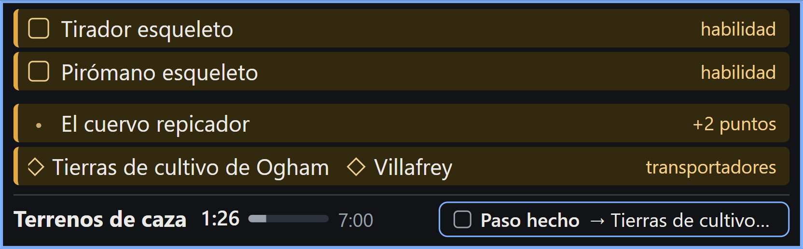
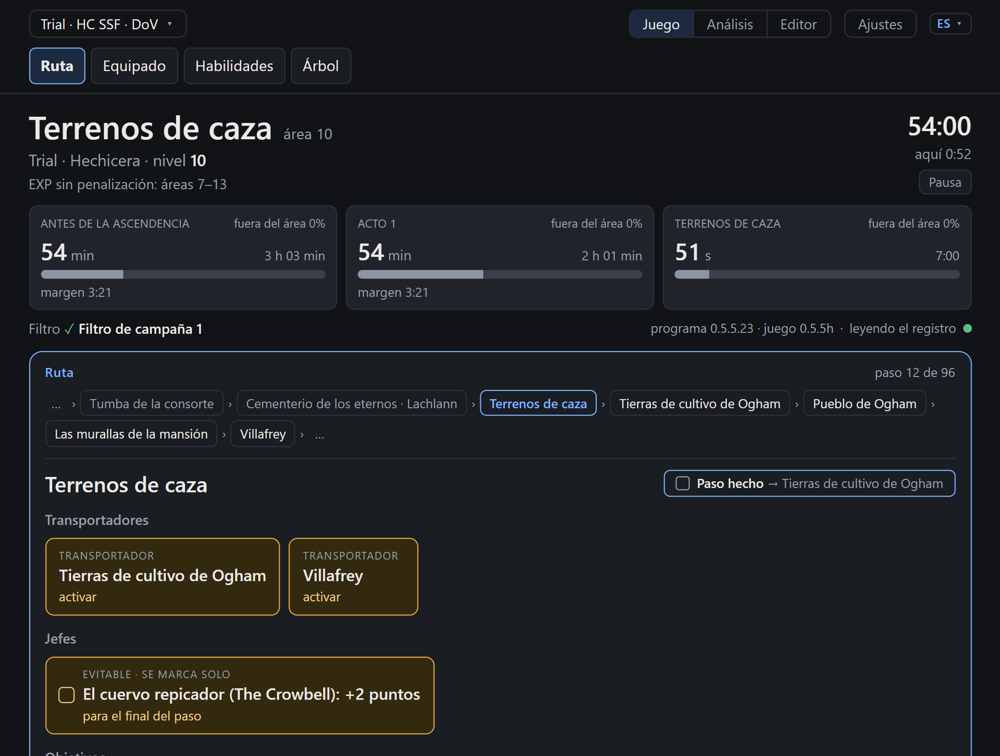
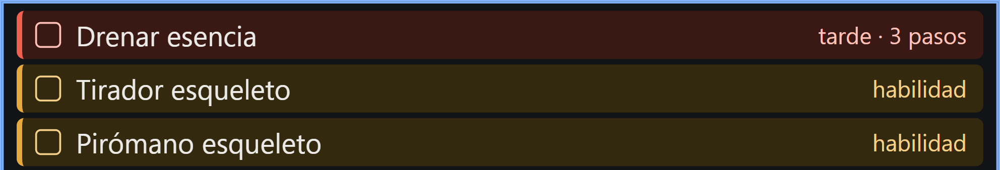
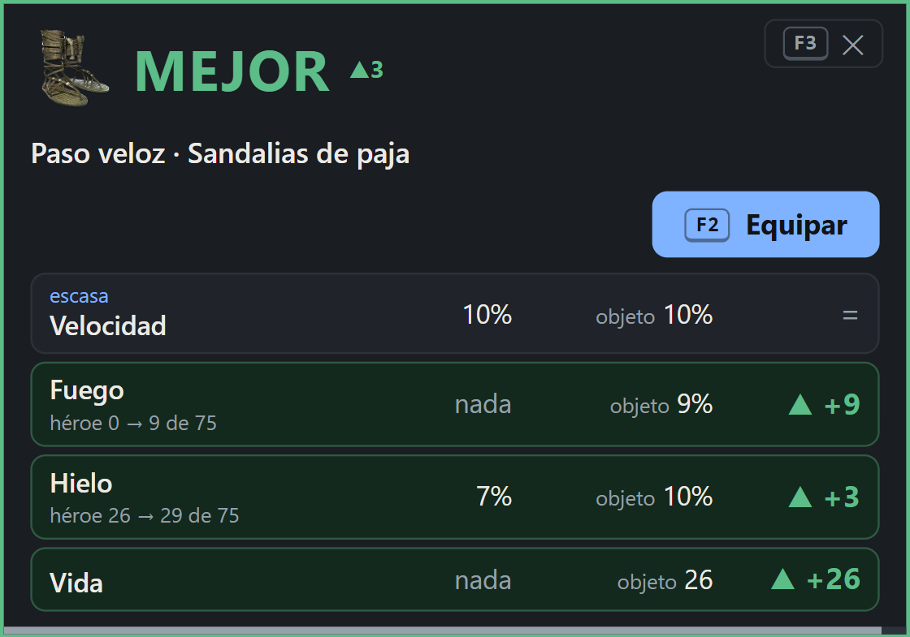
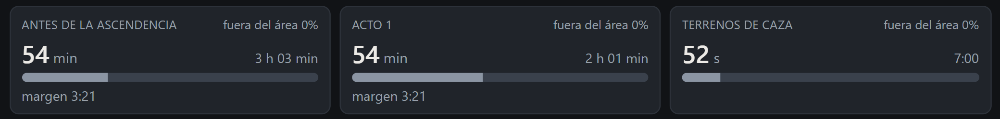
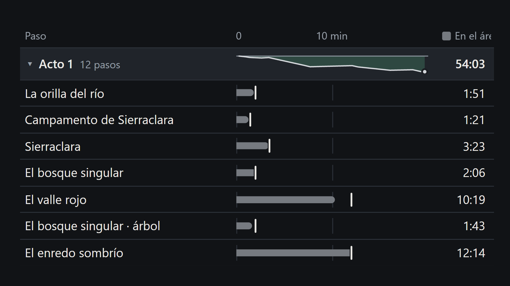
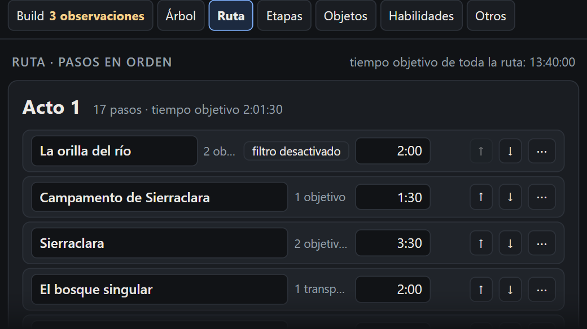

Juega como un pro
Los cientos de horas de prueba y error ya los ha invertido por ti el autor del plan. Runbook te guía por ese plan: adónde ir, a quién matar y qué recoger en cada área.
Descargar para WindowsPara autores de builds
La primera versión aún no está publicada

Tú simplemente juegas
Entras en un área y Runbook ya te muestra qué hacer en ella. Nivel, recompensas y nodos del árbol se marcan solos.

La línea roja no se va
El autor del plan sabe qué debes tener recogido y equipado al llegar a cada paso. Si vas tarde, la línea se pone roja y ahí se queda hasta que lo hagas.

Equipar o tirar
Pulsa F2 sobre un objeto y verás si es mejor o peor que el equipado. Según las estadísticas que ha elegido el autor del plan.

Al ritmo del autor
Cada paso y cada acto tiene su tiempo, sacado del plan. Ves dónde vas con margen y dónde vas atrasado.

Analítica
Cada minuto cuenta
Después de jugar, «Análisis» te muestra adónde se fue el tiempo: por pasos, en el área, en el pueblo y fuera de la ruta. Compáralo con tu héroe anterior y verás dónde has sido más rápido.


¿Sabes hacerlo mejor?
Monta tu propio plan. La campaña ya está trazada: cada área, cada jefe y cada recompensa. Añade tu build y los plazos.
PoE2 Runbook
Preguntas
Ya tengo una guía. ¿Para qué quiero Runbook?
Una guía hay que leerla, recordarla e ir comparándola con el juego. Runbook va contigo: sabe en qué área estás y te muestra qué hacer ahora.
No hay plan para mi clase. ¿Qué hago?
Los planes aparecen en el catálogo cuando sus autores los comparten. Mientras tanto puedes montar el tuyo: la campaña ya está trazada, solo falta añadir la build.
Ha salido un parche. ¿Seguirá funcionando Runbook?
Después de un parche hace falta una versión nueva de Runbook. Mientras no la haya, el programa te avisará de que el juego es más nuevo. Cuando salga, se actualiza con un solo botón.
La lista no aparece sobre el juego
Pasa cuando el juego está en «Pantalla completa»: tapa las ventanas de Runbook. Elige «Ventana en pantalla completa» en las opciones del juego y la lista aparecerá. Si no aparece, comprueba en «Ajustes» de Runbook que «Ventanas sobre el juego» está activado.
Windows no me deja ejecutar el instalador
El instalador aún no está firmado, y Windows no conoce a su editor. Haz clic en «Más información» y luego en «Ejecutar de todas formas». Cómo comprobar el archivo antes de ejecutarlo
Me falta una función. ¿Puedo pedirla?
Puedes. Es la primera versión, el programa va a seguir creciendo y se acepta cualquier petición: escribe qué falta o qué no funciona bien. Escribir al autor · Incidencias en GitHub